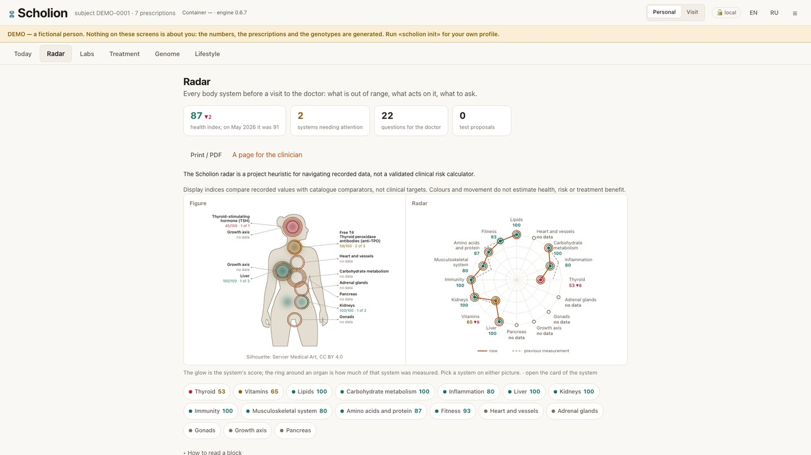
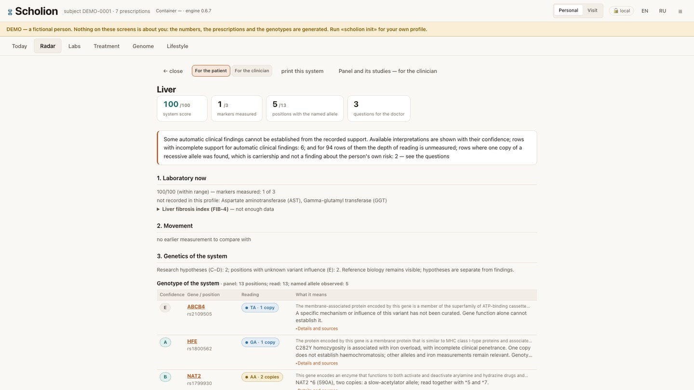
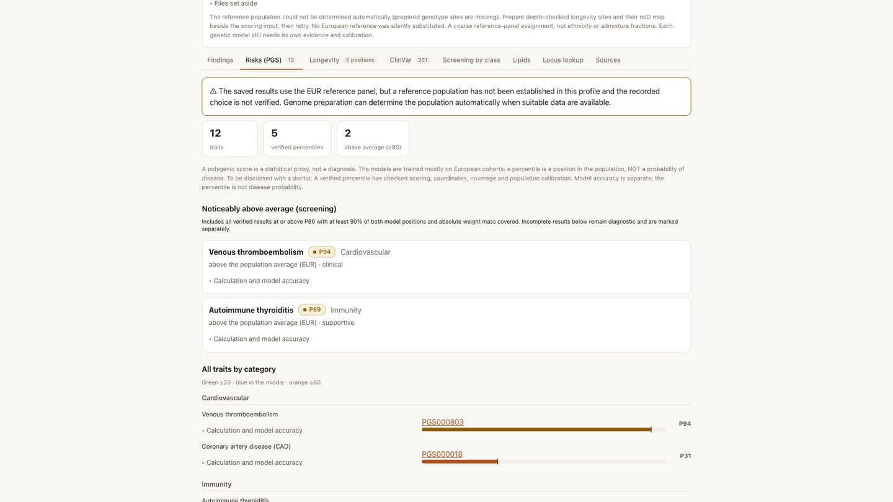
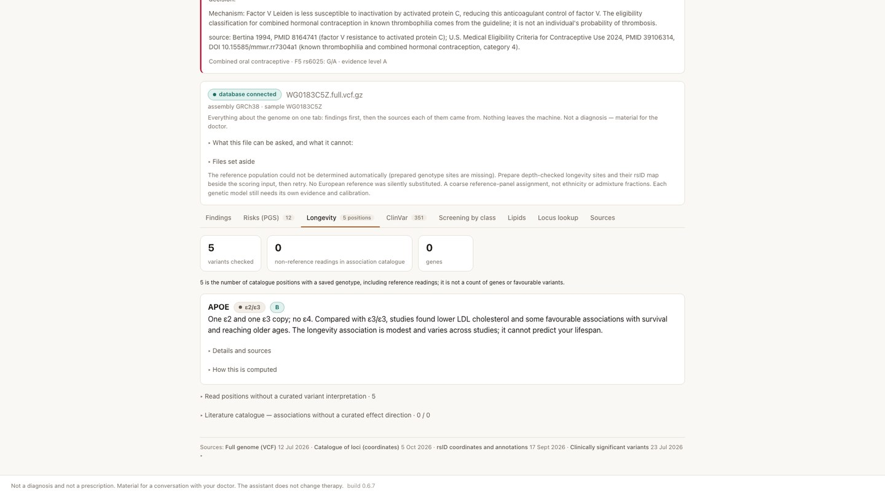
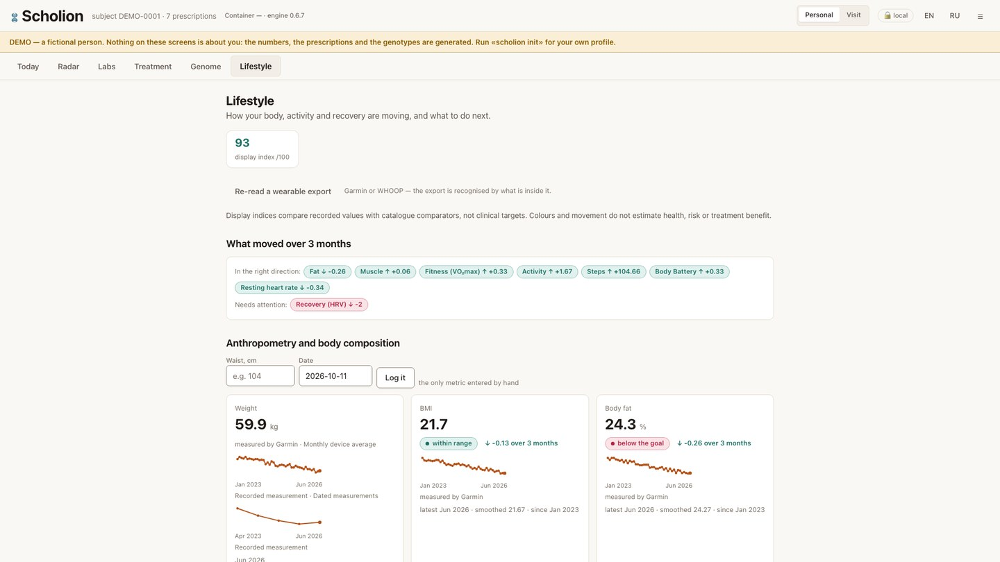
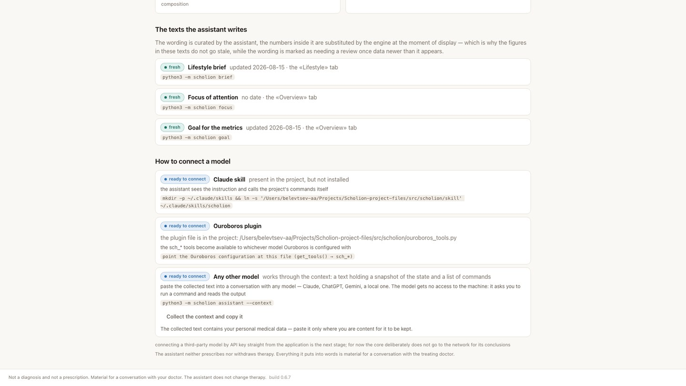

Review a PDF archive
Each self-contained form keeps its own collection date, time, specimen and source pages. Preview before approving; ambiguous boundaries or changed inputs stop the import.
Scholion 0.6.7 · local first
Genome, laboratory history, prescriptions and wearable records — one local view, with the source of each statement and the gaps that keep it from becoming a conclusion.
All screenshots: synthetic DEMO-0001. No personal records.

0.6.7
Connecting a genome determines a coarse reference population when suitable genotypes or BAM inputs are available. PGS uses the shared determination and stops when it is unresolved. System panels show sourced C/D context immediately in both views; evidence letters open the guide and gene names open their detailed reference. A percentile remains a population position, not a probability of disease; calibration checks still apply and stored results are not recalculated automatically.
Each self-contained form keeps its own collection date, time, specimen and source pages. Preview before approving; ambiguous boundaries or changed inputs stop the import.
Recorded goals, measurements, prescriptions and existing checks retain their origin, container ID and software version. Reference genetics and hypotheses can be added in a separate appendix.
The liver panel shows an expandable Liver fibrosis index (FIB-4) row. The formula uses compatible AST, ALT and platelets from one draw and age at collection. Inputs, units, sources and missing-data reasons stay visible. Clinical categories are withheld; the radar remains labelled a Scholion heuristic.
Gene function and known variant context remain available at every A–E level. All 1469 GenCC genes retain their gene–disease validity assertions. These layers do not become a personal diagnosis or treatment instruction.
Current 0.6.7 interface. Every still and both videos use synthetic DEMO-0001 data.
Explore the health radar, a system detail, polygenic scores, longevity, lifestyle trends and assistant connections. Each screen keeps its sources and limitations in view.





Two short walkthroughs show the same synthetic demo in Russian and English. Subtitles are available in each video.
The local profile stays on your computer. If you share Scholion results or collected context with a hosted assistant, that information goes to its provider.
Start with a synthetic demo, then connect your own sources. A genome is optional: laboratory history and prescriptions are useful on their own. The held reference base links 1469 genes across fifteen body systems; this is a reference catalogue, not a count of diagnoses.
Read PDF forms or enter a result by hand. Preserve the measurement date, unit and the reference printed on the form; a missing reference stays missing.
Read VCF and consumer array exports, including supported archive wrappers. BAM supports preparation and coverage workflows with external tools. A chip does not become a whole genome.
Compare the current regimen with held pharmacogenomic support and measured phenotype. Track sleep, activity and recorded experiments without turning associations into treatment effects.
The local web app and CLI, a model skill, MCP and agent plugins use the same engine. The tool interface registers 39 tools. A model is optional: code computes the result; the assistant can phrase it.
A research and educational tool, not a medical device, diagnosis or prescription. Clinical decisions belong to the patient and treating clinician.
Genotypes do not establish symptoms or treatment. Unread positions, incomplete coverage and missing support are explicit gaps.
Polygenic percentiles are model-dependent positions in a reference population, not probabilities of disease. Many source cohorts are predominantly European.
Core computations run locally. Optional reference lookups are explicit; SCHOLION_OFFLINE=1 blocks network requests. Connecting an assistant is a separate choice about what context it receives.
Python 3.10–3.13 on Linux, macOS or Windows. The PyPI package includes PDF reading; genome preparation uses separately installed bioinformatics tools.
pip install scholion
scholion init --demo
scholion overview
scholion serveUse the demo first. For your own profile, follow the loading guide; these commands do not represent a clinical assessment.
This page describes build 0.6.7. The code is Apache-2.0; the curated knowledge base is CC BY 4.0.